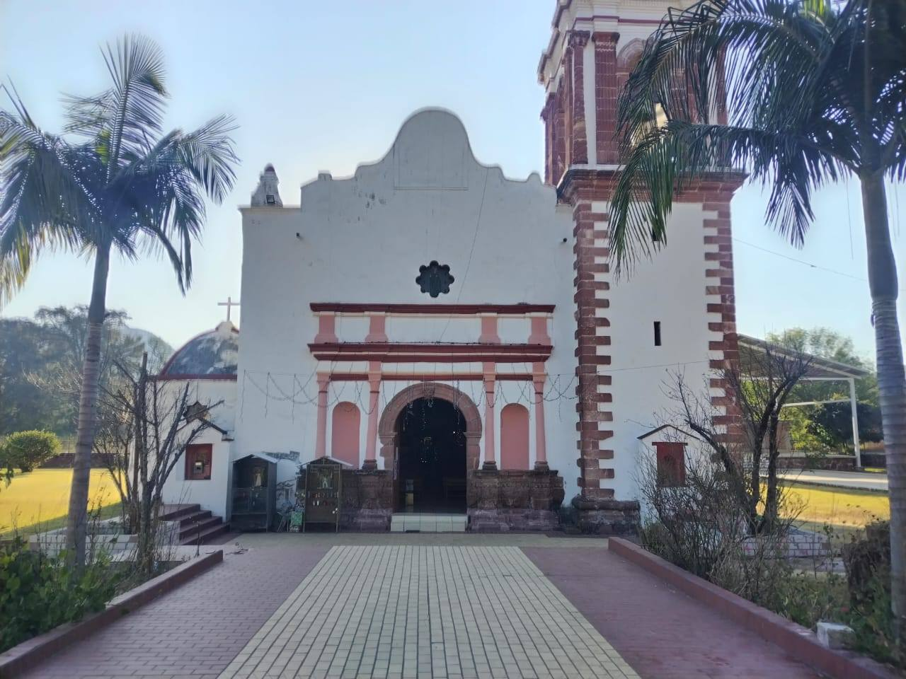

Significado y Origen
El nombre de Santiago Huajolotitlán es una joya lingüística que nos conecta directamente con el pasado prehispánico. Proviene del náhuatl Huexolotitlán, vocablo que se desglosa en:
"Huexolotl" que significa guajolote o pavo silvestre, y "titlan", que se traduce como "entre" o "lugar de". Por lo tanto, su significado es "Lugar entre guajolotes".
Época Prehispánica y Virreinal
Mucho antes de la llegada de los españoles, estas tierras ya estaban habitadas por el pueblo mixteco, conocidos como Ñuu Savi (el pueblo de la lluvia). Huajolotitlán era un punto estratégico de paso debido a su cercanía con el río.
Con la conquista, los frailes dominicos llegaron a la región para iniciar la evangelización. Durante el siglo XIX se consolidó la construcción del templo en honor a Santiago Apóstol.
